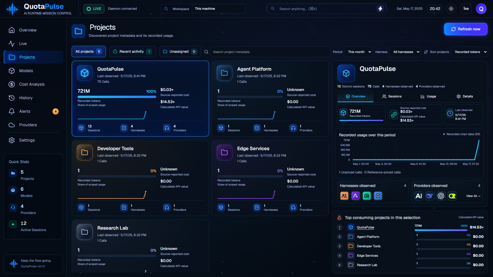
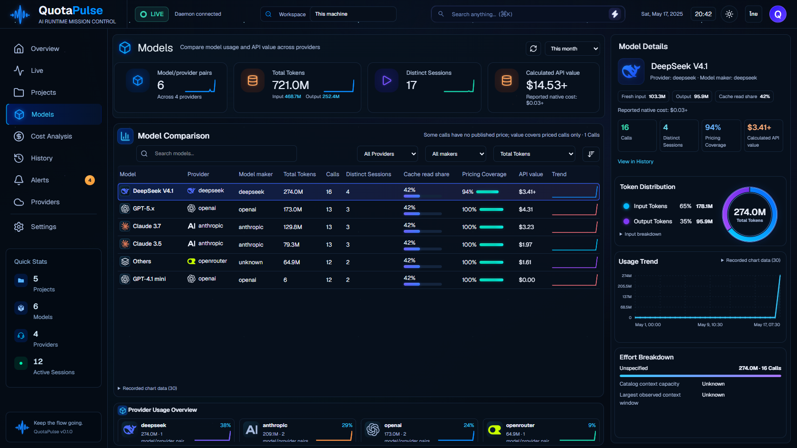

ภาพซ้ายคือ concept ภาพขวาคือแอปจาก build ล่าสุดโดยใช้ข้อมูลจำลอง กราฟและตัวเลขจริงขึ้นอยู่กับข้อมูลที่เก็บได้ คลิกภาพเพื่อดูขนาดต้นฉบับ



ภาพเทียบหน้า Cost จาก checkpoint ก่อนหน้า · ภาพเทียบทั้งแปดหน้าจาก checkpoint ก่อนหน้า